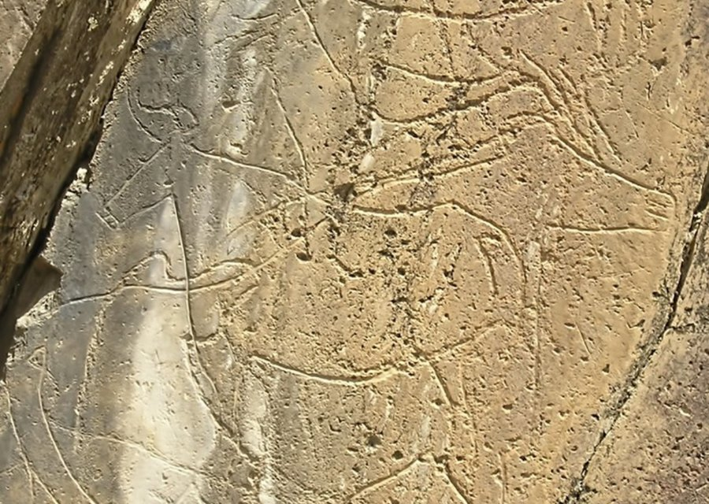
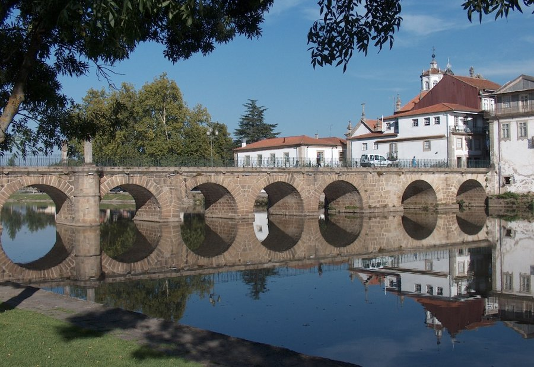
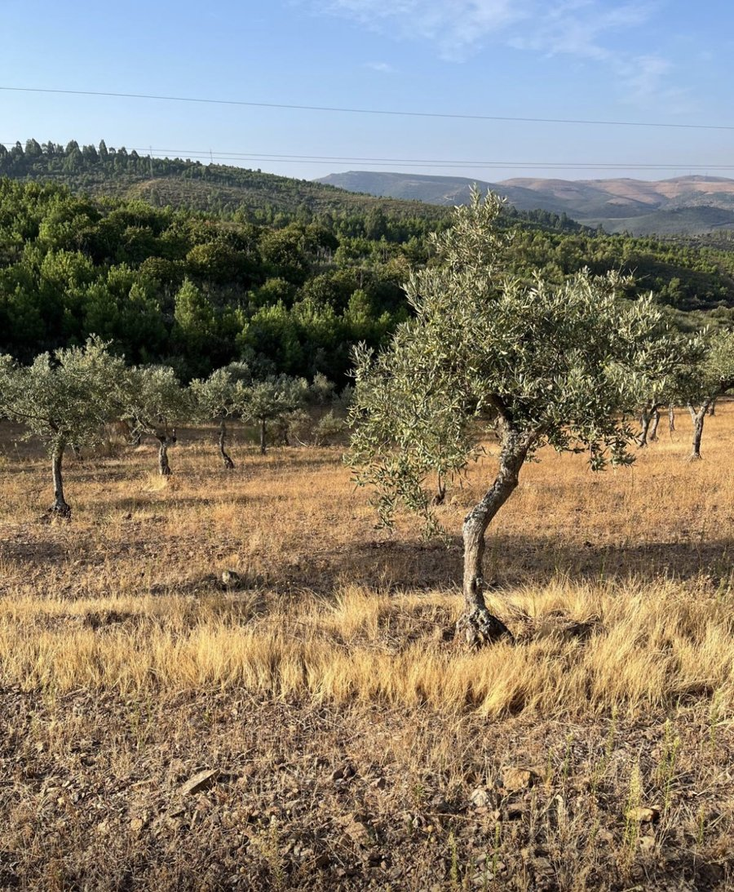

Uma região que a sua própria geografia isolou — e que, por isso mesmo, guarda alguns dos vestígios humanos mais antigos da Península Ibérica.
Muito antes de haver nome para esta terra, já havia mãos a gravar pedra. No Vale do Côa, perto de Vila Nova de Foz Côa, encontram-se milhares de gravuras rupestres a céu aberto, feitas ao longo de mais de 20.000 anos — entre o Paleolítico Superior (cerca de 25.000–10.000 a.C.) e a Idade do Ferro. Cavalos, auroques, cabras-monteses e veados foram entalhados nas rochas de xisto às margens do rio Côa, com um realismo que ainda hoje impressiona arqueólogos.

Estas são consideradas as primeiras obras-primas da humanidade em Portugal — e uma das maiores concentrações de arte rupestre paleolítica ao ar livre do mundo.
O sítio esteve prestes a desaparecer sob as águas de uma barragem projetada nos anos 90; a descoberta pública das gravuras, em 1994, travou a obra. Em 1998, a UNESCO classificou o Vale do Côa como Património Mundial — o primeiro parque arqueológico português.
Séculos mais tarde, as terras altas de Trás-os-Montes encheram-se de castros — povoados fortificados de planta circular, construídos em granito e xisto, característicos do Noroeste da Península Ibérica. A região regista uma concentração particularmente densa destes povoados nas zonas de maior altitude, acima dos 750 metros, em concelhos como Montalegre, Boticas, Vinhais e Bragança.
Eram comunidades agropastoris, com metalurgia própria e uma cultura de influência céltica, organizadas em torno da criação de gado, da guerra e do artesanato. Muitos destes castros mantiveram-se habitados mesmo depois da chegada de Roma — um sinal de resistência que ainda hoje parece definir o carácter transmontano.
Roma chegou a Trás-os-Montes através de uma rede de vias — as chamadas Vias Augustas — que ligavam Bracara Augusta (Braga) a Aquae Flaviae (Chaves, célebre pelas suas termas e pela ponte romana ainda em uso) e daí até Bragança. Ao longo destas estradas surgiram pontes, marcos miliários e inscrições em latim que ainda hoje se encontram em vilas como Favaios.

Mas a romanização desta terra foi, comparada com o litoral, lenta e parcial: estudos arqueológicos ao território de Trás-os-Montes Oriental identificam sinais claros de romanização em pouco menos de metade dos castros inventariados na região. É um detalhe revelador — mesmo sob o Império, esta continuou a ser uma terra que resistia à uniformização.
Geograficamente, Trás-os-Montes divide-se em duas metades de temperamento oposto. A Terra Fria é o planalto de invernos rigorosos onde nasce o vento Zirbo — paisagem de xisto e granito, castanheiros centenários e aldeias de pedra. A Terra Quente estende-se pelos vales mais amenos do Douro e do Sabor, onde o microclima permite culturas que o planalto recusa, incluindo, historicamente, o olival.

Foi este isolamento — a própria origem do nome “Trás-os-Montes”, a terra que fica atrás da cordilheira que a separa do litoral — que moldou séculos de austeridade, transumância e uma agricultura de subsistência transformada, com o tempo, em identidade.
Nenhum símbolo ilustra melhor essa resistência do que o mirandês. Falado na região de Miranda do Douro, este idioma de raiz asturo-leonesa sobreviveu séculos de isolamento por transmissão oral, até ser “descoberto” pelo filólogo José Leite de Vasconcelos em 1882. Em 29 de janeiro de 1999, tornou-se, por lei, a segunda língua oficial de Portugal — um reconhecimento tardio de uma voz muito antiga.